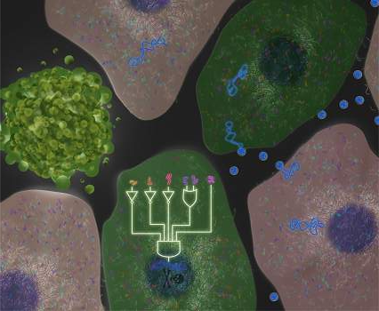
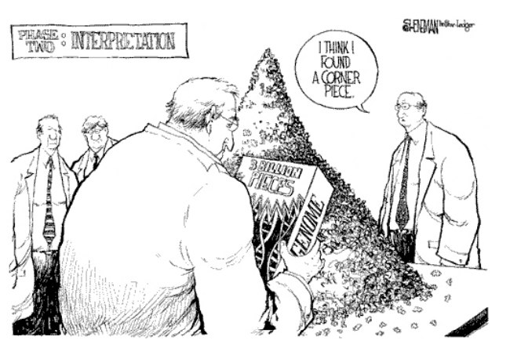
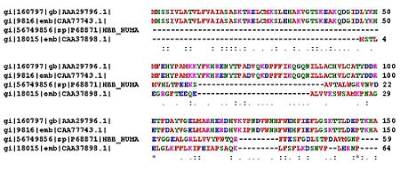
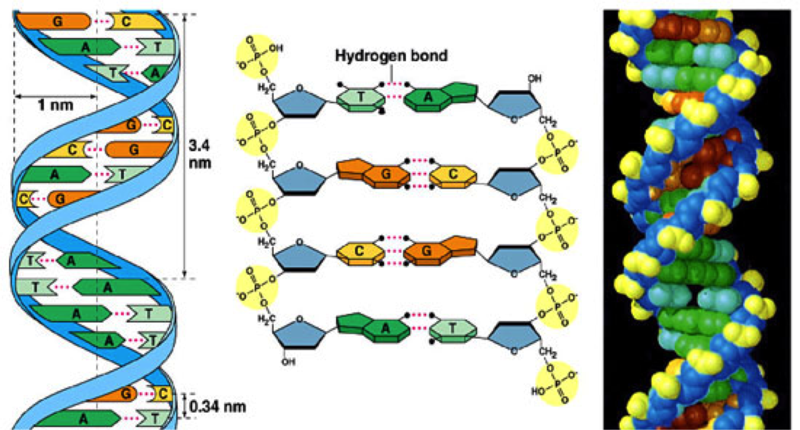
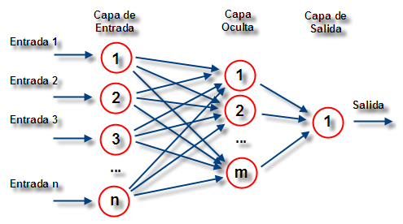
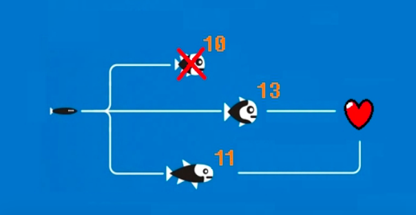
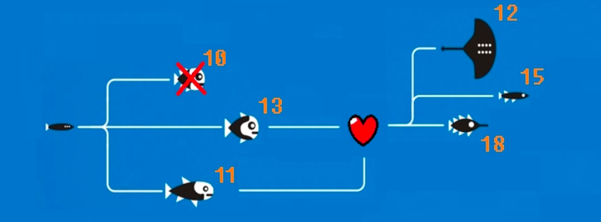
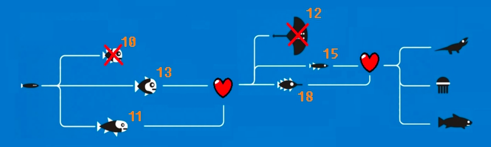
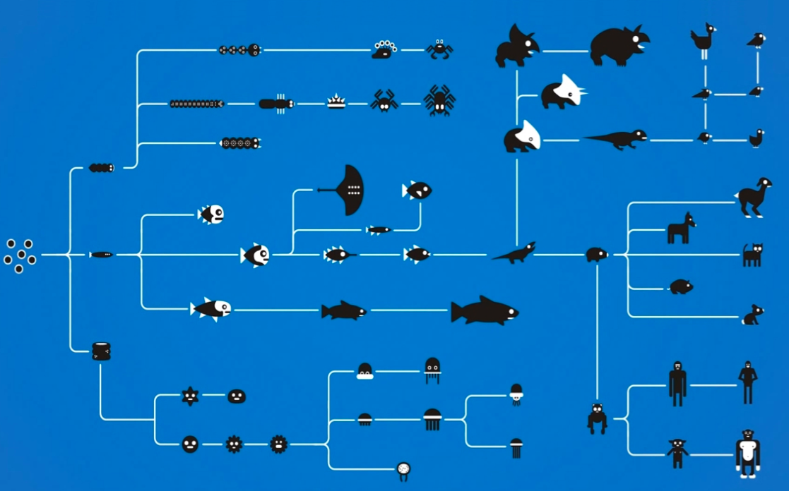

Introducción a la programación
Y sus aplicaciones en bioinformática
Introducción a la programación
La programación es la técnica que permite indicar a un ordenador cómo realizar una serie de tareas
Existen diferentes técnicas y paradigmas según el problema a resolver
ENIAC, el primer ordenador de propósito general


Diseñado para propósitos militares
El primer bug

Primeros proyectos de éxito


La computación evoluciona rápidamente durante el siglo XX

¿Qué es un programa?

Un programa no es más que un conjunto de instrucciones muy sencillas que "entran" en un procesador, y realizan una serie de operaciones
Cada procesador utiliza un conjunto de instrucciones diferente
Un programa en ensamblador

Lenguajes de programación
Los programas en ensamblador son complejos y difíciles de mantener
Por ello, surgen lenguajes que simplifican esta tarea mediante un proceso de compilación o interpretación

Compilado vs. Interpretado

Compilado vs. Interpretado

Biotecnología Dorada
¿Qué es eso?
Bioinformática
Biología Computacional
Biocomputación
Bioinformática
Desarrollo o aplicación de herramientas computacionales para el uso de datos biológicos (adquirir, almacenar, organizar, analizar o visualizar).
Biología Computacional
Desarrollo y aplicación de métodos teóricos y de análisis de datos, modelado matemático y técnicas de simulación computacional al estudio de sistemas biológicos, conductuales y sociales.
Biocomputación
Diseño de computadores con componentes biológicos o que funcionan como seres vivos
Perfil de bioinformático
Se trata de un Ingeniero Informático con conocimientos y ténicas de dicha ingeniería (inteligencia artificial, ciencias de la computación, machine learning...), utilizados junto con conocimientos de otras disciplinas (estadística, matemática aplicada, bioquímica...)
Principales proyectos
Alineamiento de secuencias y montaje de genoma
Predicción de genes y su expresión
Alineamiento estructural de proteínas
Predicción de estructuras de proteínas
Más proyectos (igual de importantes)
Modelado evolutivo
Secuenciación a gran escala
Estudio de la regulación genética mediante la interpretación de perfiles de expresión en MicroArrays
¿Qué es Python?
- Lenguaje de programación interpretado parecido a Perl y otros derivados de C
- Sintaxis más sencilla para el principiante y muy clara.
- Tipado dinámico fuerte, orientación a objetos y...
¡es multiplataforma!
Pros
- Gestión automática de la memoria
- Portable
- Desarrollo rápido
Contras
- Rendimiento
- La sintaxis es sencilla,
pero hay que entender su funcionamiento
Tipos de datos básicos
En Python no es necesario definir el tipo de cada variable (entero, real, caracter, cadena de caracteres). El entorno se encarga de la representación adecuada de cada elemento en cada momento.
Sin embargo, al trabajar con diferentes tipos de datos la conversión debe hacerse de forma explícita, o Python devolverá un error.
Esto es lo que se conoce como tipado dinámico fuerte
Números
Python trabaja con cualquier valor numérico típico (entero, real, complejo...) y soporta por defecto la mayoría de operaciones comunes.
complejo = 2.1 + 7.8jreal = 0.1e-3entero = 0×17
entero_real = int(real)real_entero = float(entero)entero_cadena = int("10000")entero1, entero2 = 10, 3entero1/entero2 # == 3float(entero1)/float(entero2) # == 3.3333333333333335float(entero1) // float(entero2) # == 3
Cadenas de texto
Una cadena de texto consiste en una sucesión de caracteres.
Python ofrece formas de trabajar con diferentes codificaciones de caracteres.
"cadena"
r"cadena raw"
u"cäðenα Ünicöde"
"""cadena
en varias
líneas"""Importante: Una cadena no puede modificarse una vez creada, pero se pueden realizar operaciones sobre la misma que retornen una nueva cadena.
Mal (error en tiempo de ejecución)
cadena="Gaudeamus igitur"
cadena[0] = "G"
cadena[1]="A" #...
> TypeError: 'str' object does not support item assignmentBien
cadena="Gaudeamus igitur"
cadena_mayusculas=cadena.upper()
> GAUDEAMUS IGITURBooleanos
True / False
Son un subconjunto de enteros (0,1)
Permiten representar que algo es verdadero o falso
Al ser un subconjunto de los enteros, cualquier valor distinto de 0 es equivalente a True y 0 es igual a False.
También se aplica a cualquier tipo nulo
cadena = ""
if cadena:
print("La cadena no está vacía")
else:
print("La cadena está vacía")Ejemplos básicos
print("Hola, Mundo")print("Nombre") nombre=raw_input() print("Encantado,"+nombre)
Ejemplos básicos
entero=3
cadena="4"print(entero+cadena)print(str(entero)+cadena)print(entero+int(cadena))Operadores
| Operadores | ||||||||||||
|---|---|---|---|---|---|---|---|---|---|---|---|---|
| Operador | Descripción | |||||||||||
| + - * / | Suma, Resta, Multiplicación, División | |||||||||||
| ** | Exponente | |||||||||||
| // | División entera | |||||||||||
| % | Módulo | |||||||||||
| ==, !=, <=, >=, <, > | Igual, distinto, mayor/menor que... | |||||||||||
Tipos de datos avanzados
Los tipos de datos básicos permiten trabajar con problemas sencillos, pero a veces son necesarias estructuras de información más complejas (o incluso definidas por nosotros mismos)
Listas
Las listas son colecciones ordenadas de datos
Admiten cualquier tipo de dato (y no tienen por qué ser uniformes)
lista = [4,"8","15",16,23,42, "isla", True]
print(lista[0])inception = ["leonardo", ["di", "caprio"]]
print(inception[1][0])Operaciones con listas
Python incorpora varias operaciones especiales para trabajar con listas de forma ágil
numeros=[0,1,2,3,4,5,6,7,8,9]
print(numeros[0:5])
> [0, 1, 2, 3, 4]
print(numeros[-1])
> 9
print(numeros[1:10:2])
> [1, 3, 5, 7, 9]
print(numeros[5:])
> [5, 6, 7, 8, 9]Tuplas
Son muy similares a las listas
tupla=(4,8,15,"16")Todas las operaciones de acceso son idénticas
Una tupla no puede modificarse una vez declaradaDiccionarios
Un diccionario es una estructura en la que cada miembro está formado por dos elementos, la clave y el valor
El acceso a los elementos se realiza por la clave asignada
apellidos={"Hugo":"Reyes","Jack":"Shephard","Kate":"Austen"}print(apellidos["Hugo"])apellidos["James"]="Ford"
Un diccionario, como cualquier otra estructura, admite cualquier tipo de dato (incluso otro diccionario).
Estructuras de control
Permiten controlar la ejecución del programa en función de una serie de supuestos. Podemos crear condiciones de ejecución, repeticiones...
Condicionales
Determinan la secuencia de código a ejecutar en función de la veracidad de una condición
numero = int(raw_input())
if numero % 2 == 0:
print("El número es par")
else:
print("El número es impar")
La sintaxis de Python
Todo conjunto de instrucciones tiene que estar delimitado.
En muchos lenguajes se utilizan llaves ({,}) u otro símbolo similar.
Python, para permitir una mayor legibilidad, determina el ámbito según el número de espacios que lo preceden (o tabulados). Importante: Hay que ser consistente.
Ejemplo de la sintaxis de Python
if numero % 2 == 0:
print("Estoy dentro del condicional")
if numero == 4:
print("En el segundo condicional")
print("En el primer condicional")
print("Fuera de los dos condicionales")Comparado con Perl...
if(numero % 2 == 0){
print("Estoy dentro del condicional");
if(numero == 4){
print("En el segundo condicional");
}
print("En el primer condicional");
}
print("Fuera de los dos condicionales");Bucles
Un bucle es una secuencia de instrucciones que se repiten según una condición
numero=0
while numero > 5:
numero = numero + 1Iterar por los elementos de una estructura es sencillo:
for elemento in [0,1,2,3,4,5,6,7,8,9]:
print(elemento)Salida de una iteración
Una iteración termina cuando
- Se terminan las instrucciones del bucle (salida limpia).
- Se ejecuta la instrucción
continue, pasando a la siguiente ejecución.
Se termina un bucle cuando
- Se ejecuta la instrucción
break, que termina la iteración actual y el bucle inmediatamente. - La condición del bucle no es cierta (y si no es cierta al comenzar el bucle, nunca se ejecutará).
Ejemplos
lista = []
cadena = raw_input("¡Dame una cadena!\n")
while cadena != "":
lista.append(cadena)
cadena = raw_input("¡Dame una cadena!\n")
else:
for elemento in lista:
print(elemento)Funciones
Una función es un conjunto invocable de sentencias, que acepta datos de entrada y emite un dato como salida
Una vez definidas pueden ser utilizadas en cualquier punto del código.
def sumar(sumando1, sumando2):
suma = sumando1 + sumando2
return suma
resultado = sumar(3,2)Expresiones regulares
Representación de un lenguaje (conjunto de cadenas de caracteres) mediante un modelo de patrones.
Permiten identificar cadenas de texto que cumplan una serie de reglas.
Consiste en un conjunto de caracteres que representan letras, números, símbolos, o conjuntos de estos
[], (), {}, ., +, ?, |,* A-Z, a-z, 1-9, \d, \w, ^,$Caracteres
| Letras y números | Capturan la letra o el número al que representan. | ||||||||||||||||||
| ? | Uno o ningún caracter | ||||||||||||||||||
| * | Entre 0 e infinitos caracteres | ||||||||||||||||||
| + | Entre 1 e infinitos caracteres | ||||||||||||||||||
| {3}, {3,9} | Número finito de caracteres a capturar | ||||||||||||||||||
| (abc) | Todo lo que esté dentro de los paréntesis como conjunto | ||||||||||||||||||
| [A-Z], [1-9], [a-z], [ab314%] | Cualquiera de los caracteres (o rangos) incluidos | ||||||||||||||||||
| \d, \w, \t, \n | Números, palabras, tabulador, nueva línea... | ||||||||||||||||||
| ^, $ | Principio y final de línea | ||||||||||||||||||
| | | Los dos lados entre el | son evaluados | ||||||||||||||||||
Las expresiones regulares son un lenguaje por sí solas.
Referencia: documentación de Python
abc123xyz define “123” var g = 123;
\d+([986])\d{8}(923)\d{6}diego escribió: "Hola" dani escribió: "Hola" diego escribió: "¿Qué tal?" dani escribió: "Bien"
diego.*(\d){7,8}[A-Z]aabbaa aaaa aabbccaa
aa(bb)?(cc)?aare, uso de regex en Python
Python incluye en la instalación básica el módulo re, que permite trabajar con expresiones regulares sin más añadidos.
import re
prog=re.compile('\d+')
resultado = prog.match(cadena)import re
resultado = re.match('\d+', cadena)
resultado = re.match('diego', cadena, re.IGNORECASE)
resultado = re.match('diego', cadena, re.DOTALL)
resultado = re.match('diego', cadena, re.MULTILINE)
re.search('diego', cadena)
re.findall('923', cadena)
Módulos
Reinventar la rueda no suele ser una buena práctica
Existen gran cantidad de bibliotecas para problemas comunes en casi todo tipo de ámbitos
Módulos
from numpy import array, abs
negativos = array([-1,-2,-3,-4])
positivos = abs(negativos)
print(positivos)Módulos
Los módulos más comunes suelen ser incluidos en la mayoría de distribuciones de Python
En caso de que un módulo no esté incluido, podemos descargarlo y añadirlo a nuestro entorno, o usar pip
pip install opencv
> Downloading/unpacking requests
...pip
pip se encarga de gestionar dependencias entre módulos e instalar nuevos componentes
Utiliza un mecanismo de uso similar a herramientas como Advanced Package Tool, CPAN, etc...
pip install opencv
pip install -U opencv
pip uninstall opencv
pip list
pip search <consulta>
pip help <comando>Trabajos realizados en la USAL
Hablemos de secuenciación
Hablemos de secuenciación
Mendel (1865): Detección y estudio de la herencia
Miescher (1868): Aislamiento del ADN
Griffith (1928): ADN = Responsable de la herencia
Alguien (1939): ¿ARN implicado en síntesis protéica?
Severo Ochoa (1959): NOBEL, descubre la transcripción ADN-ARN
Crick, Brenner & cols. (1961): 3 nucleótidos codifican un aminoácido
Hablemos de secuenciación
Watson y Crick (1950-1970):
1953: Postulan la estructura en doble hélice
1953: Crick enuncia el dogma central de la biología
1962: NOBEL, descubren la estructura en doble hélice
1966: Finalizan sus estudios dobre el cifrado del ADN
Hablemos de secuenciación
Walter Fiers (1972): Secuenciación del genoma del BacteriófagoMS2
Gilbert y Maxam (1973): Secuenciación de 24 pares de bases ('punto corrido')
Sanger (1975): Método de terminación de la cadena: Base del PGH
Mucha gente (1990-2003): Proyecto Genoma Humano
Ion Torrent Systems Inc. (2010): Método NextGenSeq Ion Torrent
Método de Sanger: Terminación de la cadena
Separación una cadena de ADN y adición cebador fluorescente y ADN polimerasa
Adición dNTP (desoxinucleótidos trifosfato)
Adición 1 ddNTP (didesoxinucleótidos trifosfato)
Extracción de las secuencias y electroforésis en gel
Repetición con otro ddNTP
Lectura 'a mano' de la fluorescencia
Next Generation Sequencing
Illumina Solexa
Basado en el método de Sanger, pero automatizado
Toma de imágenes por cada adición
Ion Torrent
Se van añadiendo tipos de nucleótidos diferentes cada vez
Sensibilidad a protones producidos en la polimerización
PGH ¿Y ahora qué?
Proyecto ENCODE
1000 Genomes Project
Roadmap Epigenomics Project
International Cancer Genome Commitee
Más cosas chulas
Acoplamiento de secuencias y estudios evolutivos
Alineamiento estructural de proteínas

Interpretación de MicroArrays

OpenWorm
¿Qué es el ADN?
- Macromolécula de desoxirribonucleótidos
- Se forman por:
- Un azúcar (desoxirribosa)
- Un fosfato (H₃PO₄)
- Una base nitrogenada (Adenina, Timina, Citosina y Guanina)
- Contiene la información genética de los seres vivos (no todos)
Su estructura...
Primaria:
Doble cadena lineal polarizada
Secundaria:
Doble hélice dextrógira
Terciaria:
Compactación hasta formar cromosoma
Inversa
dna = raw_input('Escriba una cadena de DNA: ')
inversa = dna[::-1]Complementareidad de bases
Es debida a los puentes de hidrógeno
Complementaria
compl_dic = {'A':'T','T':'A','C':'G','G':'C'}
dna = raw_input('Escriba una cadena de DNA: ')
dna = dna.upper()
compl = ''
for nuc in dna:
compl += compl_dic[nuc]Inversa Complementaria
dna = raw_input('Escriba una cadena de DNA: ')
inversa = dna[::-1]
compl_dic = {'A':'T','T':'A','C':'G','G':'C'}
invcompl = ''
for nuc in inversa:
invcompl += compl_dic[nuc]Dogma central de la biología molecular
'Un gen, una enzima.
Replicación:
ADN se multiplica -> ADN
Transcripción:
El ADN se interpreta -> ARNm
Traducción:
ARNm -> proteína
Catálisis:
proteína -> reacción
Replicación
Una cadena de ADN se desenrolla y enzimas ayudan a que se unan a las dos hebras los nucleótidos complementarios, resultando dos cadenas.
Transcripción
Se sintetiza una cadena de ARNm (mensajero) a partir de un ADN. Este es el intermediario para la expresión del gen.
Transcripción
dna = raw_input('Escriba una cadena de DNA: ')
trans_dic = {'A':'U','T':'A','C':'G','G':'C'}
mrna = ''
for nuc in dna:
mrna += trans_dic[nuc]¿Qué es el ARN?
- Macromolécula de ribonucleótidos
- Se forman por:
- Un azúcar (ribosa)
- Un fosfato (H₃PO₄)
- Una base nitrogenada (Adenina, Uracilo, Citosina y Guanina)
- Contiene la información genética de algunos virus
Pasar de ADN a ARN (no transcripción)
dna = raw_input('Escriba una cadena de DNA: ')
trans_dic = {'A':'A','T':'U','C':'C','G':'G'}
rna = ''
for nuc in dna:
rna += trans_dic[nuc]Otra forma
dna = raw_input('Escriba una cadena de DNA: ')
rna = dna.replace('T','U')
ARN mensajero (ARNm )
- Copia la cadena de ADN de forma complementaria
- Paso intermedio para la expresión del gen
Intrones
Fragmentos de ARNm que no contienen información genética, o que contienen información complementaria, alternativa, o antigua.
Exones
Fragmentos de ARNm que se traducen a proteína. Son el gen codificante propiamente dicho
Intrones y Exones
dna = 'ACTGATGGATTACGATCGATCGATCGATCTACGTACGATCGTAAAATC'
coords = [[5,13],[21,44]]
dna_final = ''
for coord_set in coords:
dna_final += dna[coord_set[0]-1:coord_set[1]]
ARN transferente (ARNt )
Lleva unido un aminoácido, identificado por tres nucleótidos del ARNm (codón)
Traducción
La hebra de ARNm se une a un ribosoma. Este une una parte complementaria del ARNt (anticodón) al ARNm (codón) y crea enlaces entre los sucesivos aminoácidos.
Código genético (ADN)
| Segunda Letra | ||||||||||||||
|---|---|---|---|---|---|---|---|---|---|---|---|---|---|---|
| T | C | A | G | |||||||||||
| P r i m e r a L e t r a |
. | _T_ | TTT | Phe | TCT | Ser | TAT | Tyr | TGT | Cys | _T_ | . | T e r c e r a L e t r a |
|
| TTC | TCC | TAC | TGC | C | ||||||||||
| TTA | Leu | TCA | TAA | Stop | TGA | Stop | A | |||||||
| TTG | TCG | TAG | TGG | Trp | G | |||||||||
| C | CTT | Leu | CCT | Pro | CAT | His | CGT | Arg | T | |||||
| CTC | CCC | CAC | CGC | C | ||||||||||
| CTA | CCA | CAA | Gln | CGA | A | |||||||||
| CTG | CCG | CAG | CGG | G | ||||||||||
| A | ATT | Ile | ACT | Thr | AAT | Asn | AGT | Ser | T | |||||
| ATC | ACC | AAC | AGC | C | ||||||||||
| ATA | ACA | AAA | Lys | AGA | Arg | A | ||||||||
| ATG | Met | ATG | AAG | AGG | G | |||||||||
| A | GTT | Val | GCT | Ala | GAT | Asp | GGT | Gly | T | |||||
| GTC | GCC | GAC | GGC | C | ||||||||||
| GTA | GCA | GAA | Glu | GGA | A | |||||||||
| GTG | GCG | GAG | GGG | G | ||||||||||
| *Cada codón corresponde a un aa | ||||||||||||||
Diccionario 'DNA gencode'
gencode = {
'ATA':'I', 'ATC':'I', 'ATT':'I', 'ATG':'M',
'ACA':'T', 'ACC':'T', 'ACG':'T', 'ACT':'T',
'AAC':'N', 'AAT':'N', 'AAA':'K', 'AAG':'K',
'AGC':'S', 'AGT':'S', 'AGA':'R', 'AGG':'R',
'CTA':'L', 'CTC':'L', 'CTG':'L', 'CTT':'L',
'CCA':'P', 'CCC':'P', 'CCG':'P', 'CCT':'P',
'CAC':'H', 'CAT':'H', 'CAA':'Q', 'CAG':'Q',
'CGA':'R', 'CGC':'R', 'CGG':'R', 'CGT':'R',
'GTA':'V', 'GTC':'V', 'GTG':'V', 'GTT':'V',
'GCA':'A', 'GCC':'A', 'GCG':'A', 'GCT':'A',
'GAC':'D', 'GAT':'D', 'GAA':'E', 'GAG':'E',
'GGA':'G', 'GGC':'G', 'GGG':'G', 'GGT':'G',
'TCA':'S', 'TCC':'S', 'TCG':'S', 'TCT':'S',
'TTC':'F', 'TTT':'F', 'TTA':'L', 'TTG':'L',
'TAC':'Y', 'TAT':'Y', 'TAA':'_', 'TAG':'_',
'TGC':'C', 'TGT':'C', 'TGA':'_', 'TGG':'W'}
Código genético (ARNm )
| Segunda Letra | ||||||||||||||
|---|---|---|---|---|---|---|---|---|---|---|---|---|---|---|
| U | C | A | G | |||||||||||
| P r i m e r a L e t r a |
. | _U_ | UUU | Phe | UCU | Ser | UAU | Tyr | UGU | Cys | _U_ | . | T e r c e r a L e t r a |
|
| UUC | UCC | UAC | UGC | C | ||||||||||
| UUA | Leu | UCA | UAA | Stop | UGA | Stop | A | |||||||
| UUG | UCG | UAG | UGG | Trp | G | |||||||||
| C | CUU | Leu | CCU | Pro | CAU | His | CGU | Arg | U | |||||
| CUC | CCC | CAC | CGC | C | ||||||||||
| CUA | CCA | CAA | Gln | CGA | A | |||||||||
| CUG | CCG | CAG | CGG | G | ||||||||||
| A | AUU | Ile | ACU | Thr | AAU | Asn | AGU | Ser | U | |||||
| AUC | ACC | AAC | AGC | C | ||||||||||
| AUA | ACA | AAA | Lys | AGA | Arg | A | ||||||||
| AUG | Met | ACG | AAG | AGG | G | |||||||||
| A | GUU | Val | GCU | Ala | GAU | Asp | GGU | Gly | U | |||||
| GUC | GCC | GAC | GGC | C | ||||||||||
| GUA | GCA | GAA | Glu | GGA | A | |||||||||
| GUG | GCG | GAG | GGG | G | ||||||||||
| *Cada codón corresponde a un aa | ||||||||||||||
Diccionario 'ARN gencode'
gencode = {
'AAA': 'K', 'AAC': 'N', 'AAG': 'K', 'AAU': 'N',
'ACA': 'T', 'ACC': 'T', 'ACG': 'T', 'ACU': 'T',
'AGA': 'R', 'AGC': 'S', 'AGG': 'R', 'AGU': 'S',
'AUA': 'I', 'AUC': 'I', 'AUG': 'M', 'AUU': 'I',
'CAA': 'Q', 'CAC': 'H', 'CAG': 'Q', 'CAU': 'H',
'CCA': 'P', 'CCC': 'P', 'CCG': 'P', 'CCU': 'P',
'CGA': 'R', 'CGC': 'R', 'CGG': 'R', 'CGU': 'R',
'CUA': 'L', 'CUC': 'L', 'CUG': 'L', 'CUU': 'L',
'GAA': 'E', 'GAC': 'D', 'GAG': 'E', 'GAU': 'D',
'GCA': 'A', 'GCC': 'A', 'GCG': 'A', 'GCU': 'A',
'GGA': 'G', 'GGC': 'G', 'GGG': 'G', 'GGU': 'G',
'GUA': 'V', 'GUC': 'V', 'GUG': 'V', 'GUU': 'V',
'UAA': '_', 'UAC': 'Y', 'UAG': '_', 'UAU': 'Y',
'UCA': 'S', 'UCC': 'S', 'UCG': 'S', 'UCU': 'S',
'UGA': '_', 'UGC': 'C', 'UGG': 'W', 'UGU': 'C',
'UUA': 'L', 'UUC': 'F', 'UUG': 'L', 'UUU': 'F'}
¡OJO!
Es importante destacar que en bioinformática sólo se trabaja con una cadena de ADN, por motivos de optimización de almacenamiento.
Hay que tener cuidado con los enunciados: 'este ADN codifica...' quiere decir 'usa el código genético de ADN' y 'este ADN se transcribe y se traduce' quiere decir 'transcribe a ARN y usa el código genético de ARN'
Traducción de un ARN
gencode = { ... }
ARN = 'AGCUAGUCAGUCGAUCGACUGACGACGUUACGAUCGAUC'
prot = ''
for i in range(0,len(ARN),3):
codon = ARN[i:1+3]
prot += gencode[codon]
Mutaciones
Cambios en el ADN que modifican (o no) la información genética de un organismo
- Génicas: bases o secuencias
- Adición
- Eliminación o Deleción
- Sustitución
- Cromosómicas: fragmentos de cromosoma
- Duplicación
- Deleción
- Inversión
- Traslocación
- Genómicas: número de cromosomas
Enzimas de restricción
Tipo de enzima capaz de reconocer un motivo de ADN y cortar la cadena por ese motivo
Bases de Datos en Bioinformática
¿Informática para Biología o Biología para Informática?
RNA, pero no ARN
Paradigma de aprendizaje y procesamiento automático inspirado en la forma en que funciona el sistema nervioso de los animales
Algoritmos Genéticos
Serie de pasos organizados que describe el proceso a seguir para solucionar un problema, pero inspirados en la evolución biológica y su base molecular y genética.

Algoritmos Genéticos
Algoritmos Genéticos
Algoritmos Genéticos
Algoritmos Genéticos
Python es más que un lenguaje de programación
La comunidad que se ha formado alrededor del lenguaje ha conseguido crear un ecosistema de desarrollo que ha derivado en una gran cantidad de proyectos basados en el lenguaje
import antigravity
from __future__ import bracesPróximo seminario
Facultad de Ciencias, Aula D3 - Viernes, 27 de Marzo, 2015
Presentación: 16:00 ~ 17:30 Talleres: 18:00 ~ 19:30
¡Muchas gracias por venir!
Para cualquier duda, siempre podéis contactarnos personalmente o utilizar ACM Respuestas
Todo el código y esta presentación estarán publicados en unos días